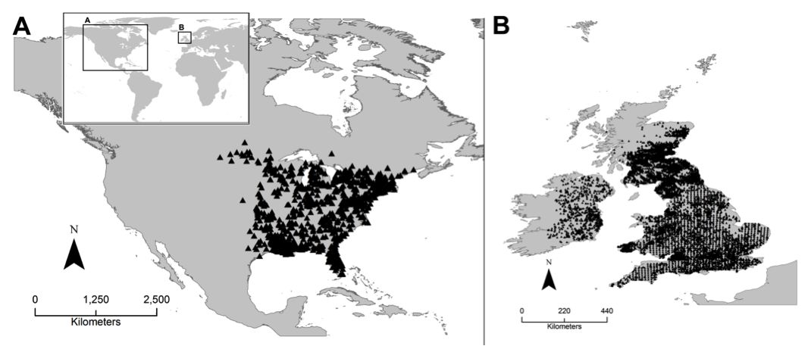
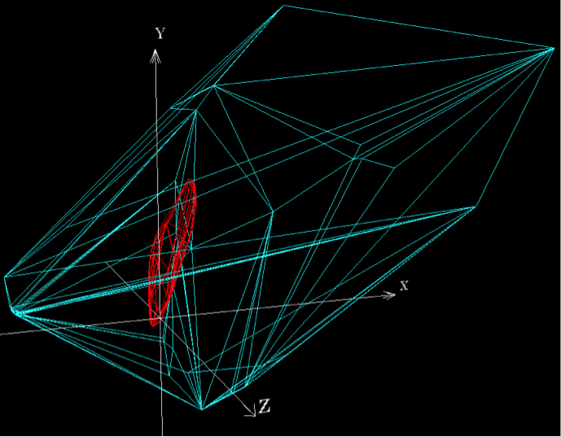
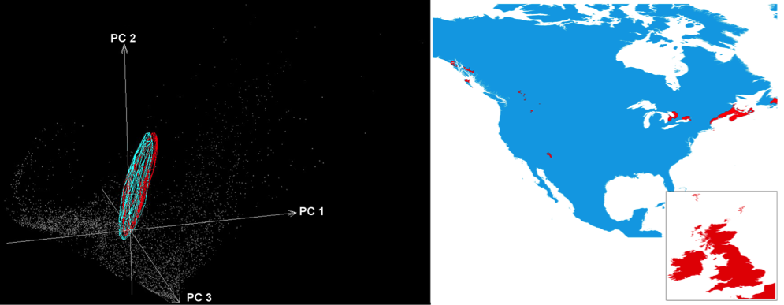

Extract similar environmental combinations from two disjoint areas.
When there is interest in evaluating the invasive potential of a species, determining the existence of similar environmental variables in native and invadable areas is critical. One example is the North American squirrel invasion in the United Kingdom (Fig. 1 and 2).


NicheA facilitates identification of similar environments shared for native and invasive populations (Fig. 3 left). Once we delimited similar environments, NicheA identified the geographic areas corresponding to similar environments (Fig. 3 right). This identification of areas with similar environments improves the interpretation of model projections from native to invasive areas, because it is easier to recognize areas with novel environments where niche model algorithms tend to extrapolate predictions.
